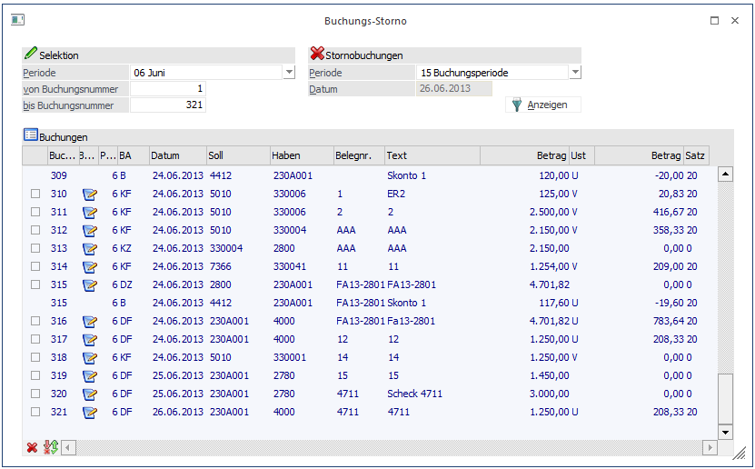
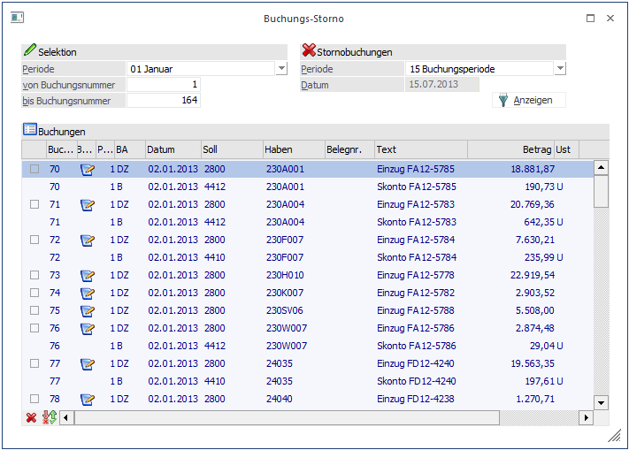
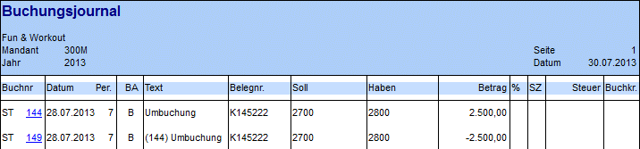
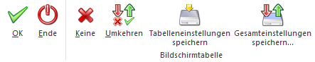

Im Menüpunkt
1 Buchen
1 Buchen
1 Buchungs-Storno
oder Schnellaufruf
1 STRG + 7
können Buchungssätze einfach storniert werden.
Eingabefelder
Ø Periode
Durch Drücken der Tastenkombination ALT + Pfeil-nach-Unten kann aus der Auswahllistbox die Periode gewählt werden, aus der Buchungen storniert werden sollen. Zusätzlich zu den einzelnen Perioden gibt es auch einen Eintrag "99 gesamtes Wirtschaftsjahr". Wird dieser ausgewählt, werden beim Füllen der Tabelle nur jene Perioden berücksichtigt, die noch nicht abgeschlossen wurden.
Ø Buchungsnr von - bis
Hier geben Sie ein, in welchem Buchungsnummernbereich die zu stornierenden Buchungen liegen.
Ø Periode für Stornobuchungen
In der Auswahllistbox wird festgelegt, in welche Periode die Buchungen storniert werden sollen. Diese ist vorbesetzt mit der Option "15 Buchungsperiode", d.h. die Buchung wird in jene Periode storniert, in die auch die ursprüngliche Buchung gebucht wurde.
Ø Datum für Stornobuchungen
Dieses Feld steht nur zur Verfügung, wenn Buchungen lt. Einstellung in den FIBU-Parametern nachträglich bearbeitet werden können und die Sortierung dafür auf "Sortierung nach Buchungsdatum" oder "Sortierung nach Erfassungsdatum" eingestellt ist. Durch die Angabe eines Stornodatums kann gewährleistet werden, nicht in einen bereits festgeschriebenen Bereich buchen zu müssen.

Hinweis 1
Können Buchungen nachträglich
bearbeitet werden, wird in der Tabelle in einer zusätzlichen Spalte angezeigt,
ob die Buchung bereits festgeschrieben oder noch provisorisch  ist.
ist.
Provisorische Buchungen werden nicht storniert sondern gelöscht.
Hinweis 2
Außerbücherliche Buchungen werden in der Tabelle andersfarbig dargestellt.
Durch Aktivieren der Checkbox vor der jeweiligen Zeile wird festgelegt welche Buchungssätze storniert werden.
Storno einer B-Buchung
Bei der Stornierung einer B-Buchung wird der gleiche Buchungssatz mit einem Negativ-Betrag noch einmal gebucht.
Storno einer DF-Buchung
Bei der Stornierung einer DF-Buchung wird zunächst überprüft, ob es bereits Zahlung oder Teilzahlungen zu dieser Faktura gibt. Ist das der Fall, wird eine neue Faktura mit negativem Betrag erzeugt, wobei als Fakturennummer die Originalnummer mit einem Minus versehen (Beispiel: aus "98-4711" wird "98-4711-") wird. Die Zahlungen bleiben weiterhin bestehen. Die negative Faktura und Ursprungs-DF müssen in der OP-Verwaltung manuell ausgeziffert werden.
Wird eine Faktura storniert, zu der es noch keine Zahlungen gibt, wird ebenfalls eine neue Faktura mit negativem Betrag erstellt, diese bekommt aber automatisch den Mahnzähler -1. Die Ursprungsfaktura wird gleichzeitig auf -1 gesetzt. Beide Fakturen werden automatisch gegeneinander ausgeziffert.
Storno einer DZ-Buchung
Beim Stornieren einer DZ-Buchung wird die Zahlung mit negativem Betrag nochmals gebucht und gleichzeitig wird die DF auf den alten Mahnzähler (vor der Zahlung) zurückgesetzt.
Storno einer KF-Buchung
Bei der Stornierung einer KF-Buchung wird zunächst überprüft, ob es bereits eine Zahlung oder Teilzahlungen zu dieser Faktura gibt. Ist das der Fall wird eine neue Faktura mit negativem Betrag erzeugt, wobei als Fakturennummer die Originalnummer mit einem Minus versehen (Beispiel: aus "98-4711" wird "98-4711-") wird. Die Zahlungen bleiben weiterhin bestehen. Die negative Faktura und Ursprungs-KF müssen in der OP-Verwaltung manuell ausgeziffert werden.
Wird eine Faktura storniert, zu der es noch keine Zahlungen gibt, wird ebenfalls eine neue Faktura mit negativem Betrag erstellt, diese bekommt aber automatisch den Mahnzähler -1. Die Ursprungsfaktura wird gleichzeitig auf -1 gesetzt. Beide Fakturen werden automatisch gegeneinander ausgeziffert.
Storno einer KZ-Buchung
Beim Stornieren einer KZ-Buchung wird die Zahlung mit negativem Betrag nochmals gebucht und gleichzeitig wird die KF auf den alten Mahnzähler (vor der Zahlung) zurückgesetzt.
Storno eines Mikrostapels
Bei der Stornierung eines Mikrostapels werden alle Buchungszeilen angezeigt, wenn die erste Zeile des Mikrostapels in der selektierten Periode gebucht wurde, unabhängig davon, in welcher Periode die anderen Zeilen gebucht wurden.
Die Buchungszeilen des Mikrostapels werden mit dem dahinterliegenden Buchungsschlüssel angezeigt.
Storno von Fakturenausgleichsbuchungen
Fakturenausgleichsbuchungen haben ein eigenes Kennzeichen, da sie storniert, aber nicht "bearbeitet" werden dürfen.
Ist die nachträgliche Buchungsbearbeitung aktiviert, können nach dem Storno eines Fakturenausgleichs die betroffenen, noch nicht festgeschriebenen Fakturen- und Zahlungszeilen nicht bearbeitet werden.

Beide Buchungszeilen werden mit einem "ST" vor der Buchungsnummer gekennzeichnet. Dies ist z.B. im Journal, Kontoblatt oder auch Kassenbuch ersichtlich.
Die Stornozeile wird im Buchungstext zusätzlich um die Journalzeilennummer der stornierten Buchung ergänzt.
Mit nachfolgendem mesonic.ini-Eintrag wird nur der ursprüngliche Buchungstext beim Stornieren einer Buchung in die Stornobuchung übernommen.
Ohne diesen Eintrag bzw. mit Eintrag =0 wird beim Buchungsstorno die Buchungsnummer der ursprünglichen Buchung in den Buchungstext der Stornobuchung übernommen.
[BUCHEN]
StornoMitUrsprText=1

Hinweis
Beim Buchungsstorno für nicht festgeschriebene Buchungen wird geprüft, ob für die ausgewählten Buchungen bereits der Kontenabgleich durchgeführt wurde. Wenn dies der Fall ist, kann die Buchung nicht storniert werden und es wird mit einer Fehlermeldung abgebrochen.
Fensterbuttons
Ø
Nach Drücken des Anzeigen-Buttons wird die Tabelle mit den entsprechenden Buchungszeilen gefüllt.
Tabellenbuttons

Ø Keine
Durch Anwahl des Keine-Buttons werden alle selektierten Journalzeilen deaktiviert.
Ø Umkehren
Durch Anwahl des Umkehren-Buttons werden alle Selektionen umgekehrt. D. h. selektierte Journalzeilen werden deselektiert, nicht selektierte Journalzeilen werden selektiert.
Ø Tabelleneinstellungen speichern
Die Spalten einer Tabelle können grundsätzlich an beliebige Positionen verschoben, bzw. in der Breite entsprechend angepasst werden. Durch Anwahl des Buttons "Tabelleneinstellungen speichern" werden die Einstellungen benutzerspezifisch gespeichert und bei dem nächsten Aufruf des Programmpunktes wieder vorgeschlagen.
Ø Gesamteinstellungen speichern
Im Gegensatz zu "Tabelleneinstellungen speichern" können mit "Gesamteinstellungen speichern" mehrere Tabellenaufbauten gespeichert und nach Wunsch geladen werden. Zusätzlich werden Sonderfunktionen der Tabelle (z.B. "Spalte gruppieren") ebenfalls bei der Speicherung bedacht.
Buttons
Ø OK
Es werden alle selektierten Journalzeilen storniert. Es wird aber noch geprüft, ob die ausgewählten Buchungen in die ausgewählte Periode storniert werden dürfen.
Ø Ende
Damit wird das Fenster geschlossen.